FlowMe Post-P11 Review Intake
Claude Design이 GitHub 소스, 문서, route evidence, 모바일 screenshot만 보고 P12 backlog를 산출할 수 있도록 정리한 진입점입니다.
Core Links
Evidence
Copy-Paste Prompt
prompt-copy-ko.md 파일을 그대로 Claude Design에 붙여넣으면 됩니다.
Guardrail Snapshot
0normal internal/source/structural/raw ISO hits
9 / 9public share primary path visible/focusable
0browse before-primary count
0first task repetition hits
0inventory duplicate progress metrics
truerestart source/export vs bottom distinct
Scenario Screenshots

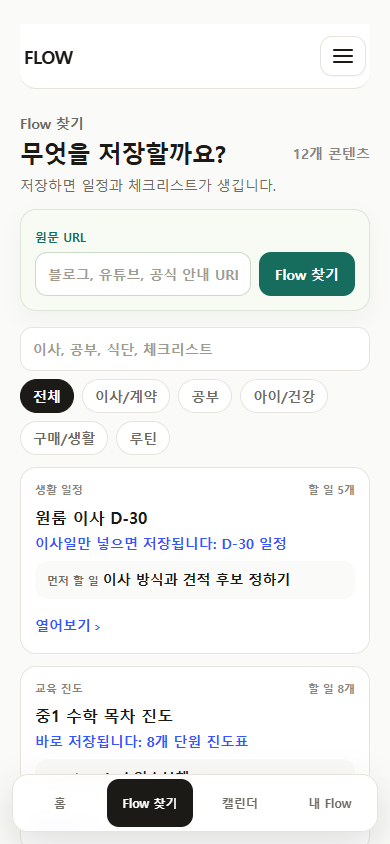


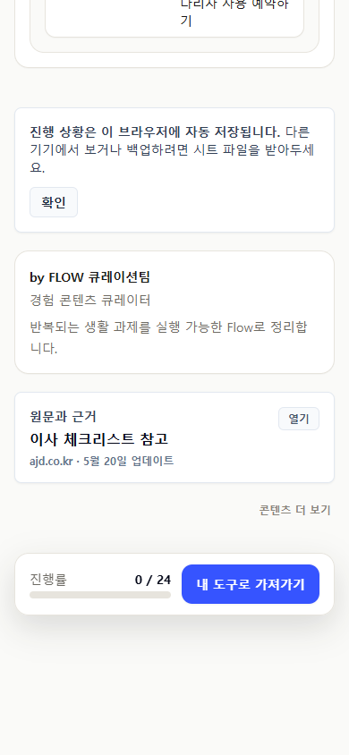
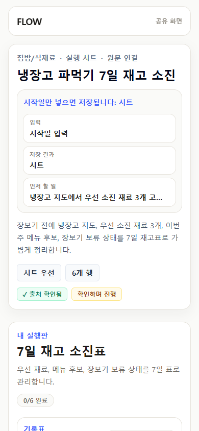
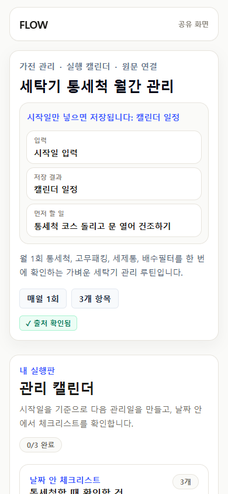
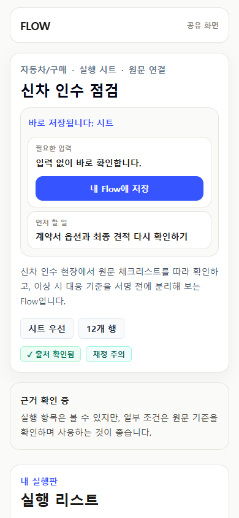
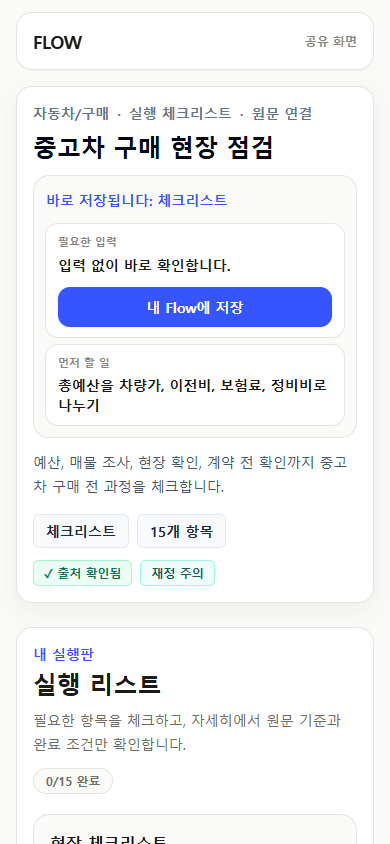
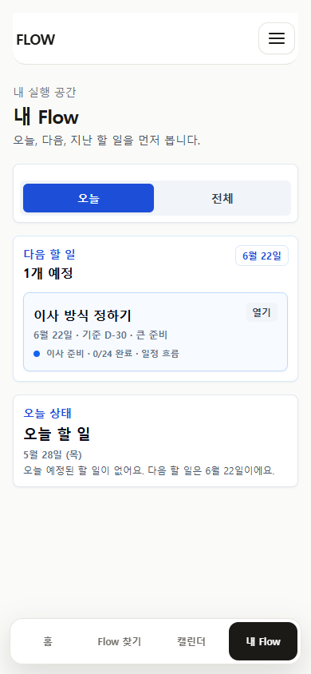
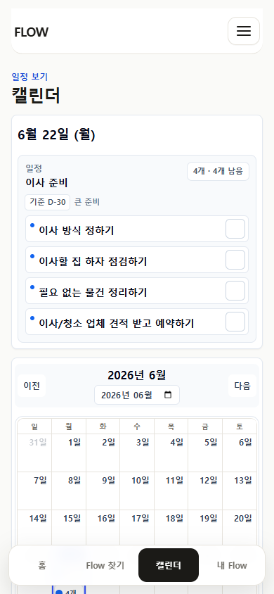
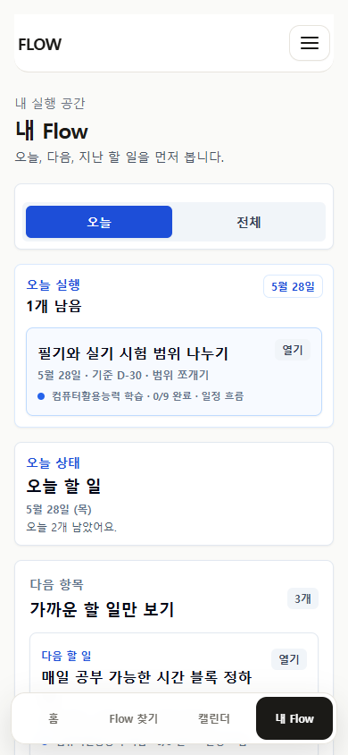
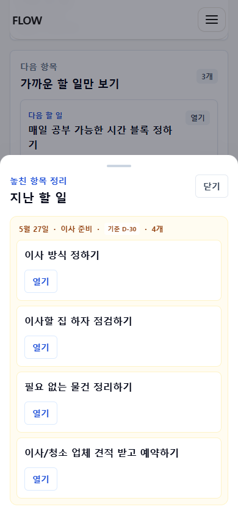
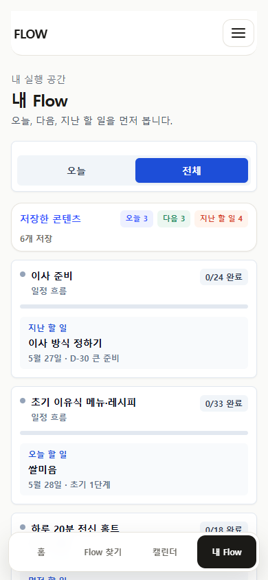
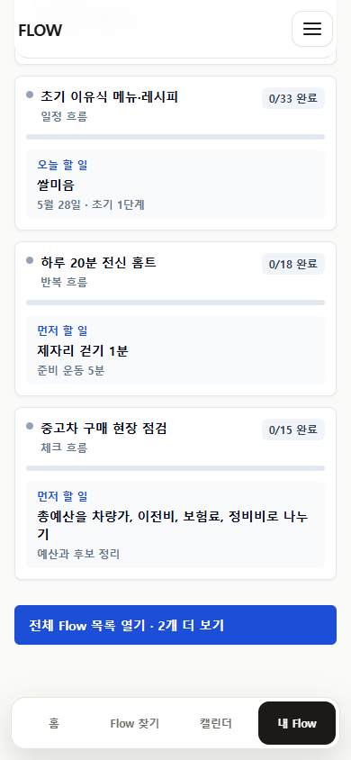
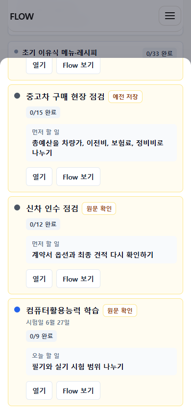


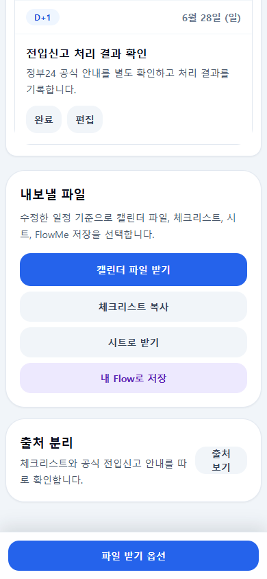
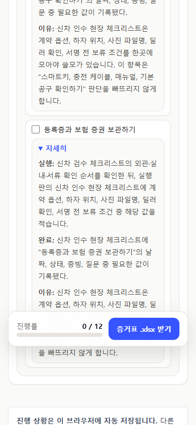
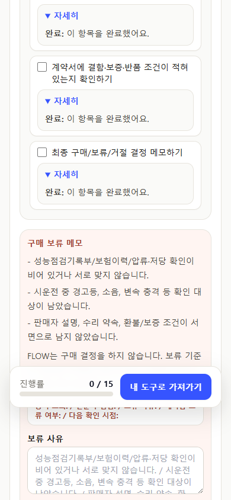
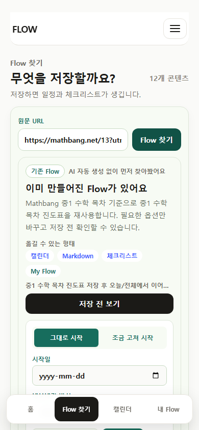
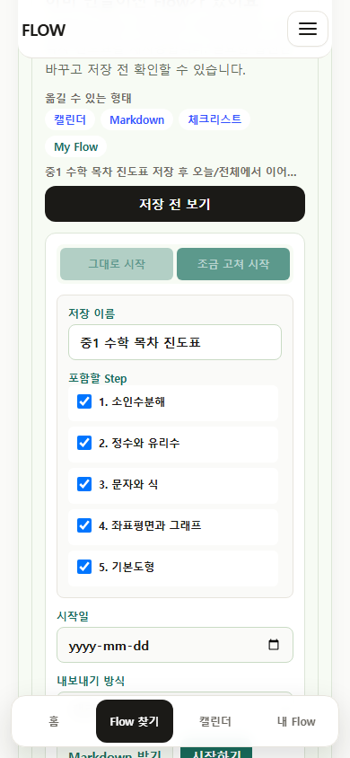
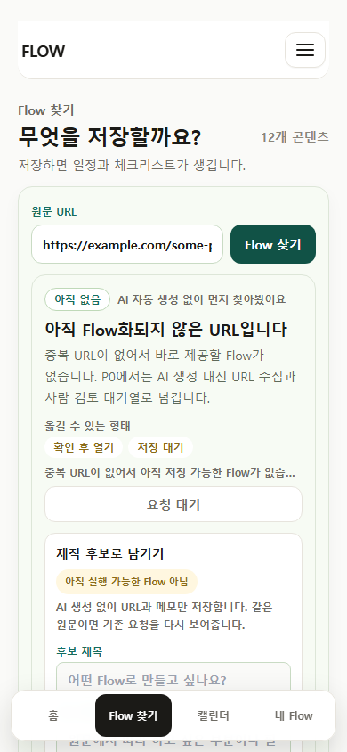

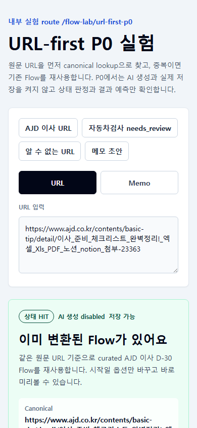
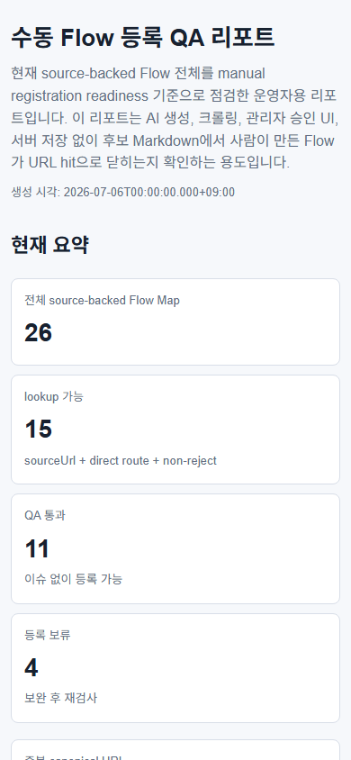
Review Request
Claude Design에는 prompt-copy-ko.md의 텍스트를 그대로 붙여넣고, Blocking / High / Medium / Low 기준의 P12 backlog를 요청합니다.